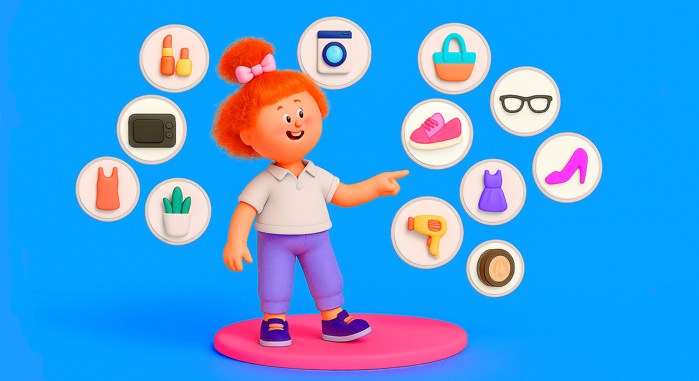

Викторина: вся правда о покупателях Ozon в Узбекистане
Задумывались ли вы когда-нибудь, что чаще берут на Ozon в Узбекистане — зубную щётку для хомяка или носки с котиками?
Ozon — это более 370 миллионов товаров на любой, даже самый необычный случай. Тут есть всё: от гречки до золотых унитазов, от ботинок для собак до роботов-пылесосов. Маркетплейс изучил продажи в Узбекистане и приготовил для вас викторину: какой товар покупают чаще!
Правила просты:
- ✔ Выбрать один из двух вариантов.
- ✔ Узнать шокирующую правду о покупательских привычках.
- ✔ Осознать, что «люди какие-то непредсказуемые». Именно поэтому на Ozon можно купить даже розового единорога в 3 часа ночи.
-
Черный
-
Зеленый
Правильный ответ — чёрный. Насыщенный, крепкий, ароматный — он идеален для перерыва в офисе и для домашнего чаепития с вареньем, мёдом или любимым печеньем. Зелёный чай хорош для неторопливых бесед и медитаций наедине с собой, он отлично сочетается с орехами и сухофруктами.
-
Куклы
-
Машинки
Бип-бип! Побеждают машинки. Спортивные болиды, внедорожники, полицейские автомобили — как удержаться и не купить новую модельку? Гонки на полу можно устроить и с сыном, и с дочкой, причем родители будут играть с тем же азартом, что и дети.
-
С жёсткой щетиной
-
С мягкой щетиной
Современные покупатели — за бережный подход, поэтому выбирают мягкую щетину. Такие щётки не травмируют десны, не царапают эмаль зубов и чистят аккуратно, но эффективно. Жёсткие щётки можно оставить экстремалам!
-
Яблоко
-
Ромашка
Сочный аромат яблока — вот что выбирают покупатели. Видимо, узбекистанцы решили: если фрукты круглый год, то почему бы и туалетной бумаге не пахнуть садом? Ромашка — это слишком банально, в борьбе с суровой реальностью она проигрывает свежести яблока.
-
Робот-пылесос
-
Традиционный пылесос
До чего дошёл прогресс… покупатели всё ещё выбирают традиционный пылесос. Он мощный, надёжный и справляется с любыми поверхностями — можно почистить дом и даже сделать уборку в машине. С насадками, которые идут в комплекте, можно пропылесосить и за диваном, и за кухонным гарнитуром. Роботы, конечно, догоняют, но пока классика остаётся в моде.
-
Смарт-часы
-
Фитнес-браслеты
Смарт-часы лидируют! И это не удивляет, ведь они как личный тренер, доктор и секретарь в одном флаконе. Смарт-часы умеют считать шаги, измерять пульс, снимать ЭКГ и даже шлют напоминания «Пора вставать!», если вы засиделись на диване. Фитнес-браслеты обычно выбирают те, кому важны цифры без лишних функций.
-
Свитшоты
-
Худи
Большинство выбирают свитшот — это универсальная часть гардероба. Он тёплый, удобный, объёмный и не обязывает продумывать модный образ. Свитшот просто создан для того, чтобы выйти по делам, на прогулку или в магазин. А худи нужны для ветреных и дождливых дней, когда хочется укрыться капюшоном (и скрыться от прохожих с любимой музыкой в наушниках).
-
Баскетбольные
-
Футбольные
Гол! Футбольный мяч нужен везде — во дворе, в школе и даже дома (только придётся попрощаться с люстрой). Стоит мячу появиться на поле, он как магнит притянет игроков. Баскетбольному мячу нужно кольцо, покрытие, площадка, а футбольный ничего не требует: достаёшь и играешь.
-
С лососем
-
С курицей
«Корм с курицей — это классика», сказали нам котики. Лосось в подливе, индейка с морковью, ягнёнок с зелёным горошком — звучит красиво, но когда кот реально голоден, он выбирает проверенную курицу. Подтверждено породистыми привередами и уличными полосатиками.
0 из 9
Покупатели Ozon в Узбекистане каждый день покупают тысячи вещей: электронику, одежду и обувь, игрушки, спортивный инвентарь, посуду, продукты питания. Поэтому на маркетплейсе можно продавать любые товары — спрос есть на всё.
Но чтобы быстрее найти свою нишу, продавцу стоит посмотреть аналитику в личном кабинете. Инструмент «Сравнение категорий» поможет узнать, на какие категории товаров растёт спрос, по каким ценам они продаются и где ниже конкуренция.
Если вы предприниматель из Узбекистана и ещё не вышли на маркетплейс — можно пройти простую регистрацию.
В помощь от Ozon:
- ✔ Готовая инфраструктура с сортировочными центрами и доставкой.
- ✔ Удобный личный кабинет с аналитикой.
- ✔ Бесплатные курсы, вебинары и тренинги.
- ✔ Личный менеджер и техподдержка для продавцов.
Реклама.